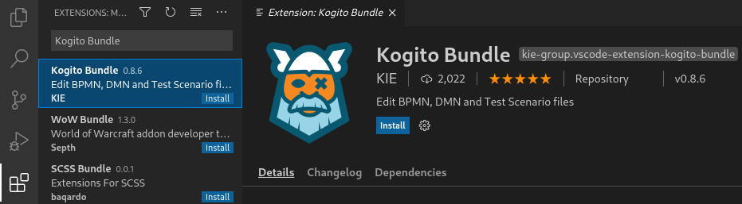
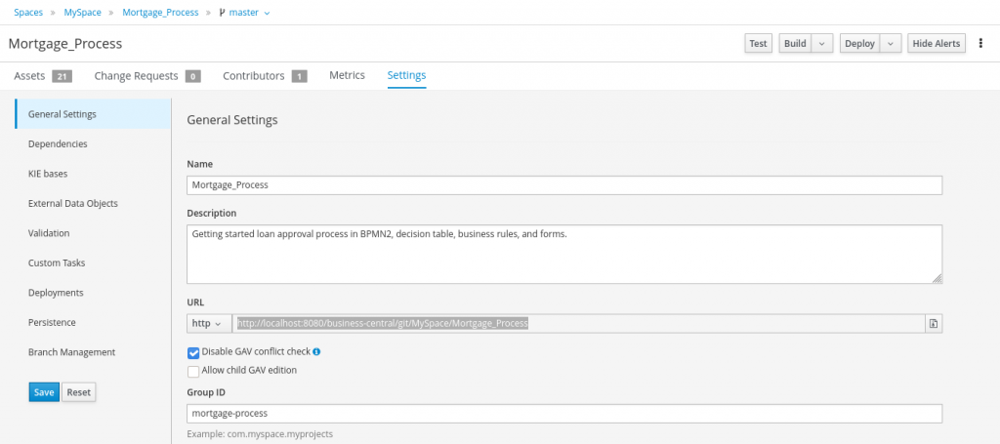
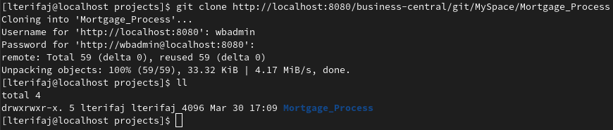
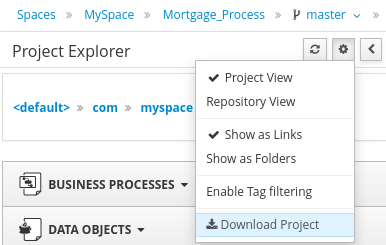
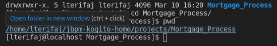
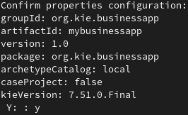

Integrate Kogito and Business Central projects using Git
About
With the VSCode Kogito Bundle extension, you can author processes, rules, or test scenarios directly in VSCode without the need to run the whole Business Central.
If you would like to know how to create, build and deploy the projects in VSCode, or you would like to integrate the Business Central and VSCode Kogito projects, you are in the right place.
Important note: Although the integration described in this post works for most use cases, it is not supported by Red Hat products.
Prepare the environment
The first thing you will need to do is to prepare the environment. It is recommended to use the latest versions when using any of the following software/tools unless specified otherwise.
Versions used in this post:
- OpenJDK: 1.8+ (e.g. 1.8.0_282 or 11.0.10)
- Maven: 3.6.3
- Git: 2.30.2
- VSCode: 1.46.0+ (e.g. 1.54.3)
- Kogito Bundle extension: 0.8.6
- Business Central: 7.51.0.Final
- KIE server: 7.51.0.Final
Tools
Git
To migrate projects between Business Central and VSCode, you need to have Git installed on your local machine.
Maven
To generate projects in VSCode and build them, ensure you have installed Maven.
Note, you might need to install JDK first if it’s not already pre-installed in your OS. See the system requirements for Maven for more information.
VSCode and Kogito
Install and open VSCode on your machine. You can find installation instructions here: https://code.visualstudio.com/docs/setup/setup-overview.
Kogito Bundle extension
You can install the bundle via UI:
Open Extensions in VSCode, find Kogito Bundle, and click install.

Alternatively, you can use VSCode Quick Open:
- Launch VSCode Quick Open (by pressing “Ctrl + P“)
- Paste the following command:
ext install kie-group.vscode-extension-kogito-bundle - Finally, press enter.
Business Central and KIE server
There are more possibilities for how to prepare the environment to run Business Central and KIE server. You can find information about installation in jbpm getting started guide or Installing and configuring Red Hat Process Automation Manager.
You can download an already prepared and configured Business Central with KIE server here: jbpm-server-7.51.0.Final-dist.zip or here: jbpm-download.html to speed up the setting process.
Once the file is downloaded, unzip it to your working directory (for example, to ~/jbpm-kogito-home/).
To run Business Central, open terminal and execute the following commands:
| # Change directory to business Central’s bin: cd ${BUSINESS_CENTRAL_HOME}/bin | |
| # on Linux | |
| cd ~/jbpm-kogito-home/jbpm-server-7.51.0.Final-dist/bin | |
| # on Windows | |
| cd C:\home\admin\jbpm-kogito-home\jbpm-server-7.51.0.Final-dist\bin | |
| # Run standalone script. | |
| # on Linux | |
| ./standalone.sh | |
| # on Windows | |
| standalone.bat |
Wait until deployment is finished. You should see something like this in the terminal:
INFO org.kie.workbench.common.screens.datasource.management.backend.DataSourceManagementBootstrap Initialize deployments task finished successfully.
Login to Business Central:
- Open the web browser and enter the address: http://localhost:8080/business-central
- Login with username: wbadmin password: wbadmin
Migrate projects from Business Central to VSCode
If you have properly configured the environment, we can proceed with importing projects from Business Central to VSCode. Note, this workflow should work for the most of the use cases, but if you experience any issues, please report it here: https://issues.redhat.com/projects/KOGITO/summary.
Create or open any project in Business Central:
- Navigate to Menu -> Projects
- You can create a new project by clicking the Add Project button or you can open any Sample project by clicking on Try Samples, select project(s) and click Ok.
Once you have a Business Central project, there are two options how to migrate it to VSCode. The first and preferred one is to clone the repository using git. The second option is to download it using GUI.
Clone the project using Git
To clone the repository, open Business Central, navigate to Project’s Settings, locate URL property, choose either ssh or http from the drop-down menu and copy the link. Alternatively you can use the local git repository that you can find in the “.niogit” folder of your Business Central, but this is not recommended.

Open the terminal in VSCode by clicking on Terminal -> New Terminal or use “Ctrl + Shift + `” shortcut and execute these commands:
| # cd $WORKING_DIRECTORY | |
| cd ~/jbpm-kogito-home/ | |
| # mkdir $PROJECTS | |
| mkdir projects | |
| # cd $WORKING_DIRECTORY/$PROJECTS | |
| cd ~/jbpm-kogito-home/projects | |
| ################################################### | |
| # To clone repository, execute one of the following | |
| ################################################### | |
| # git clone http://localhost:8080/business-central/git/$SPACE_NAME/$PROJECT_NAME | |
| git clone http://localhost:8080/business-central/git/MySpace/Mortgage_Process # use wbadmin:wbadmin credentials when asked to authenticate | |
| # git clone ssh://localhost:8001/$SPACE_NAME/$PROJECT_NAME | |
| git clone ssh://localhost:8001/MySpace/Mortgage_Process | |
| # git clone ${BUSINESS_CENTRAL_HOME}/bin/.niogit/$SPACE_NAME/$PROJECT_NAME.git | |
| git clone ~/jbpm-kogito-home/jbpm-server-7.51.0.Final-dist/bin/.niogit/MySpace/Mortgage_Process.git |

Download the project using GUI
To download the project using GUI in Business Central, follow the instructions below:
- Open any asset in the project in Business Central
- Open Project Explorer
- Click on the Cogwheel icon
- Click on Download Project

- Unzip the project.
Note, there is no Git repository cloned if you downloaded the project using Business Central GUI. If you would like to push/pull changes between Business Central and VSCode, you need to set up a remote repository first by executing the following commands:
| # cd $WORKING_DIRECTORY/$PROJECTS/$PROJECT_NAME | |
| cd ~/jbpm-kogito-home/projects/Mortgage_Process | |
| git init | |
| ######################################################## | |
| # To add remote repository, execute one of the following | |
| ######################################################## | |
| # git remote add origin http://localhost:8080/business-central/git/$SPACE_NAME/$PROJECT_NAME | |
| git remote add origin http://localhost:8080/business-central/git/MySpace/Mortgage_Process | |
| # git remote add origin ssh://localhost:8001/$SPACE_NAME/$PROJECT_NAME | |
| git remote add origin ssh://localhost:8001/MySpace/Mortgage_Process | |
| # git remote add origin ${BUSINESS_CENTRAL_HOME}/bin/.niogit/$SPACE_NAME/$PROJECT_NAME.git | |
| git remote add origin ~/jbpm-kogito-home/jbpm-server-7.51.0.Final-dist/bin/.niogit/MySpace/Mortgage_Process.git | |
| ######################################################## | |
| git add . | |
| git pull origin master |
Open the project
Now open the cloned/downloaded project in VSCode. There are two options.
The first option is to use the VSCode terminal.
Execute the following commands, hover over the project’s path (the return value of pwd command), and press “Ctrl + Click“. The project will open in a new window.
| # cd $WORKING_DIRECTORY/$PROJECTS/$PROJECT_NAME | |
| cd ~/jbpm-kogito-home/projects/Mortgage_Process | |
| pwd |

The second option is to use VSCode GUI.
Click File -> Open folder or use “Ctrl + O” shortcut, locate the root folder of the project, and then click OK.
Tip: If you don’t want to close the current project, you can open a new window using the shortcut “Ctrl + Shift + N” before opening the project.
Create a project in VSCode
You can also create your own projects from scratch directly in VSCode, instead of transferring them from Business Central.
You can do that by generating a kjar project skeleton with a Maven archetype command.
If you want to create more projects, use properties with specific GAV when generating projects. If you want to create a Case project, specify it by using caseProject property when generating projects.
Open terminal in VSCode by clicking on Terminal -> New Terminal or use “Ctrl + Shift + `” shortcut and execute the following commands:
| # Navigate to your projects working directory | |
| # cd $WORKING_DIRECTORY/$PROJECTS/ | |
| cd ~/jbpm-kogito-home/projects | |
| ############################## | |
| # Execute one of the following | |
| ############################## | |
| # Create a project using maven archetype | |
| mvn archetype:generate -DarchetypeGroupId=org.kie -DarchetypeArtifactId=kie-kjar-archetype -DarchetypeVersion=7.51.0.Final | |
| # Create a project using maven archetype with specific GAV | |
| # If you want create more projects, you can also specify GAV of your project by adding these properties to the command: -DgroupId=<my.groupid> -DartifactId=<my-artifactId> | |
| mvn archetype:generate -DarchetypeGroupId=org.kie -DarchetypeArtifactId=kie-kjar-archetype -DarchetypeVersion=7.51.0.Final -DgroupId=org.kie.businessapp -DartifactId=businessapp-two | |
| # Create a Case project using maven archetype | |
| # If you want to create a skeleton for Case project, add -DcaseProject=true property to the command | |
| mvn archetype:generate -DarchetypeGroupId=org.kie -DarchetypeArtifactId=kie-kjar-archetype -DarchetypeVersion=7.51.0.Final -DcaseProject=true |
During the project generation, it will ask you to confirm the configuration. Press y to confirm it and then Enter.

If you are experiencing issues with generating the artifact, ensure you have configured the maven repositories properly. Note, the command might not work properly in PowerShell when trying to execute it on Windows. Use Cmd prompt instead.

Create assets in VSCode
If you have successfully created the project skeleton, it is time to create all assets and necessary files for your project.
Kogito editors
There are currently three different editors provided by Kogito VSCode extension: BPMN, DMN and Test Scenario.
BPMN editor
Files with bpmn extension $BPMN_FILE_NAME.bpmn are handled by the BPMN, respectively Business Process editor. You can design processes with this modeler.
DMN editor
Files with dmn extension $DMN_FILE_NAME.dmn are handled by the DMN editor. You can design decisions with this modeler.
SCESIM editor
Files with scesim extension $SCESIM_FILE_NAME.scesim are handled by the Test Scenario editor. You can design test scenarios for testing your DMN assets with this modeler.
Note, the pop-up dialog will ask you to select the DMN asset when creating Test Scenario. Therefore make sure you create it in advance.
Create assets
If you create/open any of the listed assets above, an editor will open.
To use VSCode GUI, follow the instructions below:
- Open the project (click on Explorer in upper left corner)
- Create the missing folders by right click on the location -> New folder.
src/main/resources/$PACKAGE(e.g.src/main/resources/org/kie/businessapp)
Use this location for BPMN and DMN assets.src/test/resources/$PACKAGE(e.g.src/test/resources/org/kie/businessapp)
Use this location for SCESIM assets.
- Select the location, click on New File, and input file name with the desired extension (e.g. process.bpmn, dmn.dmn or test-scenario.scesim).
The other option is to use a terminal. Execute following commands:
| ############################ | |
| # Create BPMN and DMN assets | |
| ############################ | |
| # cd $WORKING_DIRECTORY/$PROJECTS/$PROJECT_NAME/src/main/resources/ | |
| cd ~/jbpm-kogito-home/projects/mybusinessapp/src/main/resources/ | |
| # mkdir -p $PACKAGE | |
| mkdir -p org/kie/businessapp | |
| # cd $WORKING_DIRECTORY/$PROJECTS/$PROJECT_NAME/src/main/resources/$PACKAGE | |
| cd ~/jbpm-kogito-home/projects/mybusinessapp/src/main/resources/org/kie/businessapp | |
| # touch $FILE_NAME_WITH_EXTENSION… | |
| touch process.bpmn dmn.dmn | |
| ################################################################################### | |
| ############################ | |
| # Create Test Scenario asset | |
| ############################ | |
| # cd $WORKING_DIRECTORY/$PROJECTS/$PROJECT_NAME/src/test/resources/ | |
| cd ~/jbpm-kogito-home/projects/mybusinessapp/src/test/resources/ | |
| # mkdir -p $PACKAGE | |
| mkdir -p org/kie/businessapp | |
| # cd $WORKING_DIRECTORY/$PROJECTS/$PROJECT_NAME/src/test/resources/$PACKAGE | |
| cd ~/jbpm-kogito-home/projects/mybusinessapp/src/test/resources/org/kie/businessapp | |
| # touch $FILE_NAME_WITH_EXTENSION… | |
| touch test-scenario.scesim |
The created file can be opened by listing the files in the folder with ls command, hovering over the file name and then “ctrl + click“. Alternatively, you can open the file using GUI by locating the file and clicking on it.
After creating a few assets and modeling simple BPMN process, your project may look like this:

Other file formats
We don’t provide custom editors in Kogito for any other assets not mentioned above, including work item handlers. However, you can find useful tips on how to create some of them below.
Data Objects
The Data Object in Business Central is no more than a POJO, so you can create/use it manually:
- Create a file
$CLASS_NAME.java(e.g.Person.java) insrc/main/java/$PACKAGE(e.g.src/main/java/org/kie/businessapp) - Create a java class in the file. For example:
package org.kie.businessapp; public class Person {/*...*/}
Forms
You can create it in Business Central and copy the source code or download the file to your local project, usually to src/main/resources/$PACKAGE (e.g. src/main/resources/org/kie/businessapp).
Other assets
You can create any other assets that you need for your project in Business Central and copy the file/source code to VSCode. Another option is obviously to create them from scratch by creating a file with specific extension $FILE_NAME.$EXTENSION (e.g. rules.drl) in desired location (e.g. src/main/resources/org/kie/businessapp).
Migrate a project from VSCode to Business Central
Once you have your project created, you can migrate it to Business Central.
You need to create a repository from the project first. Open the terminal and execute these commands:
| # cd $WORKING_DIRECTORY/$PROJECTS/$PROJECT_NAME | |
| cd ~/jbpm-kogito-home/projects/mybusinessapp | |
| git init | |
| git add . | |
| git commit -a | |
| # Press Insert, write commit message (e.g. Initial commit), press Esc, input :wq and press Enter |
Once you created the repository, import the project to Business Central:
- Open or Create a space in Business Central
- Click on the arrow drop-down menu next to the Add Project and click Import Project
- Paste the URL to your repository and click Ok
file://$WORKING_DIRECTORY/$PROJECTS/$PROJECT_NAME/.git(e.g.file:///home/user/jbpm-kogito-home/projects/mybusinessapp/.git) - Select the project and click Ok
Synchronize changes between VScode and Business Central
Whether you migrated your projects from Business Central or you created a new one in VSCode from scratch, you might want to synchronize the changes between VSCode and Business Central. You can do it manually using Git since there is no automated way to do that.
The first thing you need to do is to set up a remote repository if you haven’t done so:
| # cd $WORKING_DIRECTORY/$PROJECTS/$PROJECT_NAME | |
| cd ~/jbpm-kogito-home/projects/mybusinessapp | |
| git init | |
| git add . | |
| git commit -a | |
| # Press Insert, write commit message (e.g. Initial commit), press Esc, input :wq and press Enter |
After that, pull or push the changes between Business Central and VSCode. Note, currently VSCode Kogito extension is under alpha release, hence some corner case issues may arise with complex round-trip synchronization. Also, if any conflicts occur, you will need to handle them manually.
| ################################################## | |
| # Pull the changes from business-central to VSCode | |
| ################################################## | |
| # git pull business-central $BRANCH_NAME | |
| git pull business-central master | |
| ################################################## | |
| # Push the changes from VSCode to business-central | |
| ################################################## | |
| git add . | |
| git commit -a | |
| # Press Insert, write commit message (e.g. Initial commit), press Esc, input :wq and press Enter | |
| # git push business-central $BRANCH_NAME | |
| git push business-central master |
Build and Deploy the project
To be able to visualize the process in the runtime monitoring tools, ensure that all processes have their SVGs generated. If you created the project from scratch, you have to generate them manually:
- Open process in VScode and click SVG icon in the upper right corner.
- Rename the generated SVG file to the format
${process id}-svg.svg(e.g.process-svg.svg)
You can find the process id in the Properties panel in the Business Process editor.
Build the project
Go to your project home (where pom.xml file is located) and execute the command:
| # Build and install project to the local maven repository | |
| mvn clean install |
If you are experiencing issues with not resolved dependencies, ensure you have set the right maven repositories. You can also add necessary repositories to the project’s pom.xml file.
Deploy the project using Swagger
You can deploy your project to any KIE server you want. For demonstration purposes, we will use KIE server which comes alongside with Business Central.
First, ensure the KIE server is running. See “Business Central and KIE server” section above for more information.
Open http://localhost:8080/kie-server/services/rest/server and login with credentials:
username: kieserver password: kieserver1!
You should get a response: “<response type="SUCCESS" msg="Kie Server info"> ...“
Open http://localhost:8080/kie-server/docs/ and follow the instructions:
- under “KIE Server and KIE containers” category find:
PUT /server/containers/{containerId} Creates a new KIE container in the KIE Server with a specified KIE container ID - Click PUT and then Try it out
- Input
{containerId}(e.g.containerMyBusinessApp) - Update container-id and GAV in body (you can find it in pom.xml of your project)
For example:containerMyBusinessApp,org.kie.businessapp:mybusinessapp:1.0 - Click Execute
You should get a successful response with code201

You can check your containers at http://localhost:8080/kie-server/services/rest/server/containers
Conclusion
I hope this article helped you better understand how to integrate Kogito and Business Central projects. You can seamlessly migrate the existing projects or create a completely new one directly in VSCode. You can now easily start using the Kogito Bundle extension and utilize it to its full potential.